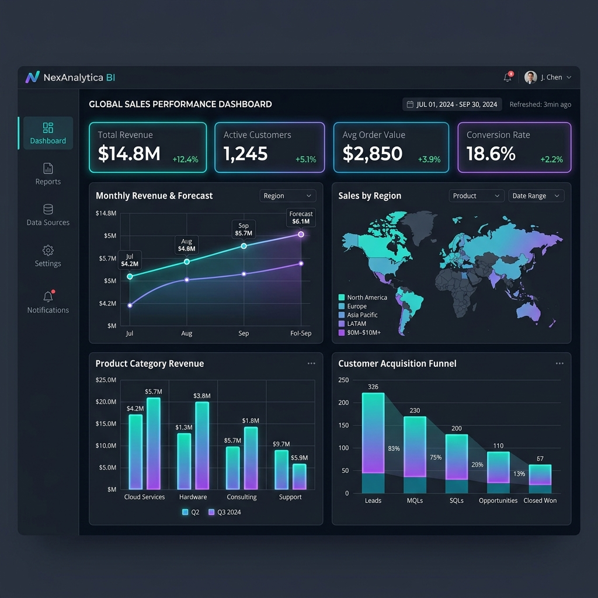
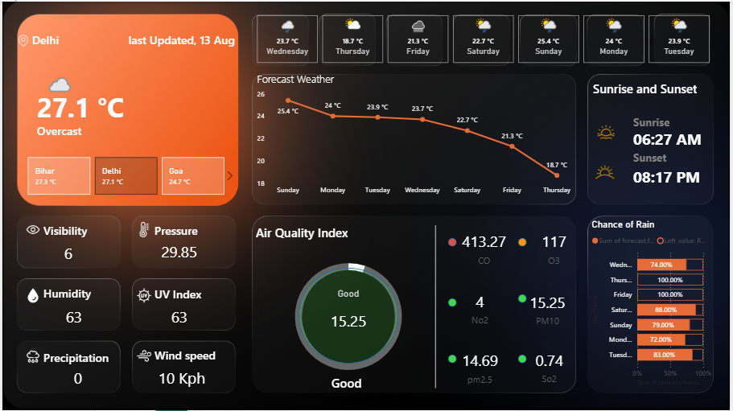
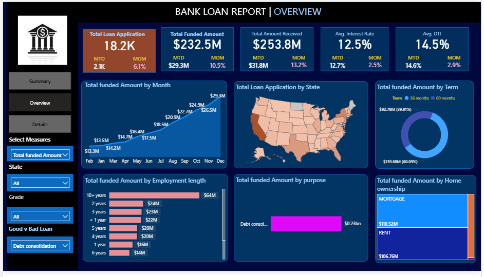
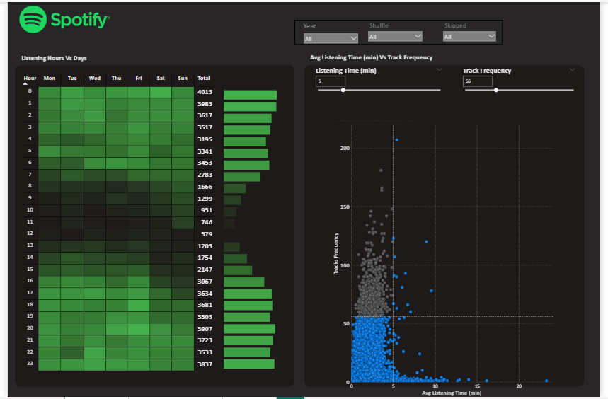
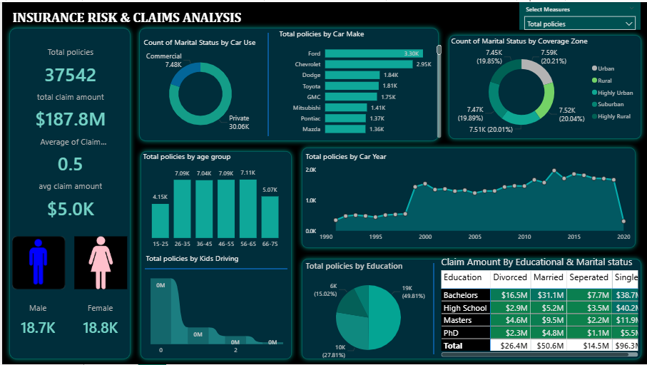
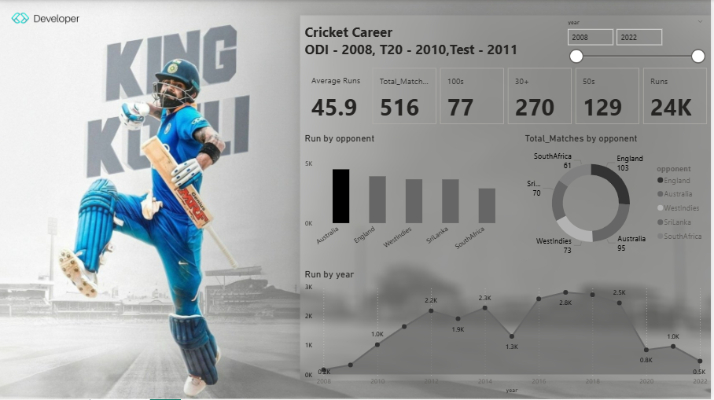

// DATA ANALYST PORTFOLIO
Results-driven Data Analyst bridging finance and technology. I transform complex datasets into actionable insights using Power BI, SQL, Python & AI-powered tools.

Results-driven Data Analyst Intern and final-year BBA (FIA) student at Delhi University bridging the gap between finance and technology. I utilize Power BI, SQL, Python, and AI tools like Copilot and PandasAI to automate workflows and transform complex data into actionable insights. I have successfully built predictive models and reduced reporting cycles by 40%.
Core technical skills I leverage to deliver data-driven solutions.
Interactive dashboards, custom DAX measures, real-time reporting & visual storytelling
Complex queries, KPI automation, data optimization & warehouse management
Predictive modeling, exploratory analysis, Pandas, Scikit-learn & automation
Copilot, PandasAI, AI-assisted storytelling & workflow automation
Financial modeling, advanced formulas, pivot analysis & Google Analytics
Stock market analysis, investment strategy, risk assessment & valuation
Specialization: Financial Investment Analysis (FIA)
Status:
Final Year (Semester VI)
Board: CBSE
Real-world data analytics projects showcasing SQL, Python, Power BI & ML expertise.

Problem: Identify growth gaps and optimize revenue streams.
Tools: Postgre SQL, Advanced Queries.
Insight: Top 5% of users generate 30% of total revenue.
Impact: Recommended targeted retention, estimating 10% sales boost.

Problem: Lack of visibility into customer purchasing patterns.
Tools: Python, Pandas, Matplotlib, Seaborn.
Insight: Weekend sales underperformed expectations by 25%.
Impact: Provided data foundation for weekend promotional campaigns.

Problem: Fragmented reporting across multiple insurance domains.
Tools: Power BI, DAX, Excel.
Insight: 15% of claims were delayed due to specific process bottlenecks.
Impact: Automated dashboards reduced reporting cycle by 40%.

Problem: Unpredictable retail sales causing inventory inefficiencies.
Tools: Python, Scikit-learn, ARIMA.
Insight: Identified strong historical seasonal trends in Q4.
Impact: Enhanced inventory planning accuracy by 18%.

Problem: Generic product marketing lowering conversion rates.
Tools: Python, K-Means Clustering, PCA.
Insight: Revealed 3 distinct customer persona clusters.
Impact: Designed strategy to increase recommendation CTR by 22%.
I'm always open to discussing data projects, collaborations, or opportunities.